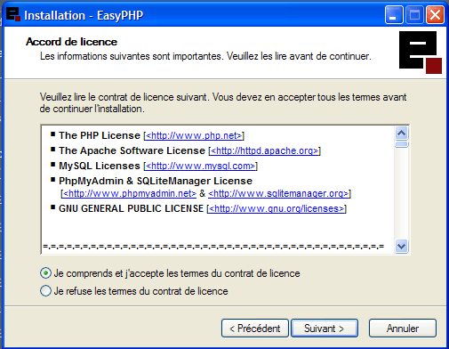
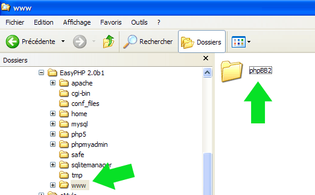
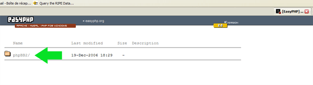

Découvrez ici une liste de documents concernant phpBB: son installation, sa mise à jour et enfin son utilisation.
En bref, apprenez ici à vous servir de phpBB2!
Modérateur: Equipe
 de mathieu23 le 23 Fév 2007 à 03:11
de mathieu23 le 23 Fév 2007 à 03:11
Installer phpBB en local avec EasyPhp
Pour
pouvoir travailler tranquillement sur son forum sans pour autant de le
rendre indisponible aux membres il existe la possibilité d'installer le
forum en local, sur son propre PC, d'y tester de nouveaux mods,
nouvelles améliorations, changement de design, etc...
Pour ce faire il faut installer un serveur virtuel comme l'est EasyPHP.
Il vous permettra d'avoir en local un forum tout à fait fonctionnel et tout autant que s'il se trouvait sur un serveur FTP.
Tutorial basé sur les précédents travaux de Breakolami et d'Elglobo.
Dernière édition par
mathieu23 le 23 Fév 2007 à 03:16, édité 1 fois.
-
mathieu23
- Resp. des modérateurs
-
- Messages: 10944
- Inscription: 01 Sep 2004 à 21:08
-
de mathieu23 le 23 Fév 2007 à 03:11
1.1. Téléchargement
Téléchargez EasyPhp sur le site officiel. Pour ce faire, cliquez ici : http://www.easyphp.org
Ensuite, cliquez sur Téléchargements et prenez la version courante : EasyPhp 2.0 (attention le fichier fait 13 Mo).
Une fois le fichier téléchargé, lancez-le pour démarrer l'installation.
1.2. Installation
L'installation est d'une simplicité extrême.
Sélectionnez la langue Française.
Cliquez sur Suivant.

Cliquez sur Je comprends et j'accepte les termes du contrat de licence puis cliquez sur Suivant.
Cliquez sur Suivant.
Cliquez sur Suivant.
Cliquez sur Suivant.
Cliquez sur Installer.
L'installation se réalise...
L'installation est terminée. Cliquez sur Terminer.
En bas droit de votre écran, à côté de l'horloge, vous avez désormais un nouvel icône représenté par un "e" chevauchant un carré rouge.
Dernière édition par
mathieu23 le 23 Fév 2007 à 03:14, édité 1 fois.
-
mathieu23
- Resp. des modérateurs
-
- Messages: 10944
- Inscription: 01 Sep 2004 à 21:08
-
de mathieu23 le 23 Fév 2007 à 03:12
2° Création de la base de données.
Vous allez maintenant, et avant toutes choses, créer votre base de données.
Au bas droit de votre écran, faites un clic droit sur ce "e". Un menu s'affiche.
Cliquez sur Administration. Votre navigateur Internet s'ouvre ou un nouvel onglet. Le menu suivant s'affiche :
Cliquez sur MYSQL Administration. Une nouvelle fenêtre s'ouvre sur votre explorateur Internet et l'écran suivant s'affiche :
Vous allez saisir phpbb dans le champ prévu (voir ci-dessus) puis vous cliquez sur Créer. Le nom phpbb sera ici, en local, le nom de votre base de données.
PhpMyAdmin vous confirme la bonne création de votre base de données et
le nom de celle-ci figure désormais dans la liste déroulante des bases
de données disponibles.
-
mathieu23
- Resp. des modérateurs
-
- Messages: 10944
- Inscription: 01 Sep 2004 à 21:08
-
de mathieu23 le 23 Fév 2007 à 03:14
3° Installation de phpBB
3.1. Mise en place des fichiers phpBB sur votre PC.
Dans votre explorateur de fichiers, allez dans Program Files et double-cliquez sur EasyPHP 2.0b1 (ou la version EasyPHP que vous avez téléchargée).
Double-cliquez sur WWW.

Collez-y (dans le répertoire WWW) la dernière version phpBB que vous aurez préalablement téléchargée [ici].
Double-cliquez sur votre répertoire phpBB2 que vous venez de coller.
Celui-ci doit contenir différents répertoires et fichiers.
3.2. Procédure d'installation du forum phpBB sur votre PC et connection avec la base de données.
Au bas droit de votre écran, faites un clic droit sur ce "e". Un menu s'affiche. Cliquez sur Web local. Votre navigateur Internet s'ouvre ou un nouvel onglet.

Une nouvelle fenêtre dans votre navigateur Internet s'ouvre et affiche le nom de votre dossier phpBB.
Cliquez sur phpBB2 pour lancer la procédure d'interconnection entre la base de données et votre forum. Vous parvenez à cet écran :
Soyez vigilant en remplissant ce formulaire. Voici les champs à sélectionner ou à remplir :
- Langue par défaut du Forum : FRENCH
- Type de la base de données : MySQL 3.x
- Choix du type d'installation : Installation
- Nom du serveur de bae de données / SGBD : localhost
- Nom de votre base de données : phpbb
- Nom d'utilisateur : root
- Mot de passe : (laissez vide)
- Préfixe des tables : phpbb_
- Adresse e-mail de l'Administrateur : (laissez vide)
- Nom de domaine : 127.0.0.1
- Port du serveur : 80
- Chemin du script : /phpBB2/
- Nom d'utilisateur : admin
- Mot de passe : 123456
- Mot de passe [Confirmer ] : 123456
Cliquez sur Démarrer l'installation. Un nouvel écran s'affiche :
Cliquez sur Finir l'installation. Un nouvel écran s'affiche :
Dans votre explorateur de fichiers, allez dans Program Files et double-cliquez sur EasyPHP 2.0b1 (ou la version EasyPHP que vous avez téléchargée). Double-cliquez sur WWW puis phpbb2 puis supprimez les répertoires suivants :
Une fois cela fait, retournez sur votre navigateur et rafraichissez votre page. Le message Veuillez vous assurer que les deux répertoires install/ et contrib/ sont supprimés disparait pour laisser place à votre forum en parfait état de fonctionnement.
Pour vous connecter à votre forum, saisissez en identifiant le mot admin et en mot de passe 123456.
3.3. Activation de la fonction mail()
Dans votre explorateur de fichiers, allez dans Program Files et double-cliquez sur EasyPHP 2.0b1 (ou la version EasyPHP que vous avez téléchargée).
Double-cliquez ensuite sur Apache puis ouvrez le fichier php.ini avec le bloc-notes de Windows ou votre éditeur de textes.
Recherchez la ligne contenant ceci (ligne 655 ou proche) :
- Code: Tout sélectionner
SMTP = localhost
Remplacez localhost par le nom du serveur SMTP de votre fournisseur d'accès.
Exemples :
- SMTP = smtp.free.fr pour FREE
- SMTP = smtp.wanadoo.fr pour WANADOO
- SMTP = smtp.fr.aol.com pour AOL
- etc.
Recherchez ensuite la ligne contenant ceci (ligne 659 ou proche) :
- Code: Tout sélectionner
;sendmail_from = me@example.com
Remplacez par :
- Code: Tout sélectionner
sendmail_from = me@example.com
puis remplacez me@localhost.com par votre adresse mail personnelle.
-
mathieu23
- Resp. des modérateurs
-
- Messages: 10944
- Inscription: 01 Sep 2004 à 21:08
-
de mathieu23 le 23 Fév 2007 à 03:15
4° Problème possible avec EasyPhp
Il
a été rencontré, parfois, un problème avec EasyPHP pour lequel nous
vous donnons ci-après la conduite à tenir si celui-ci est rencontré
lorsque vous démarrez EasyPHP et qu'un message d'erreur s'affiche sur
votre écran, vous disant qu'Apache n'a pu démarrer car le port concerné est déjà utilisé.
Sans le serveur Apache impossible de lancer EasyPHP.
Ce problème est du au fait qu'EasyPHP s'entrechoque avec d'autres applications utilisant le port 80.
Dans votre explorateur de fichiers, allez dans Program Files et double-cliquez sur EasyPHP 2.0b1 (ou la version EasyPHP que vous avez téléchargée).
Double-cliquez sur Apache puis sur conf. Ouvrez avec le bloc-notes de Windows ou votre éditeur de textes le fichier nommé httpd.conf.
Cherchez la ligne suivante (ligne 63 ou proche) :
- Code: Tout sélectionner
Listen 127.0.0.1:80
Remplacez par (on utilise ici un autre port, en l'occurence le port 5555) :
- Code: Tout sélectionner
Listen 127.0.0.1:5555
Relancez EasyPHP qui devrait maintenant correctement fonctionner.
-
mathieu23
- Resp. des modérateurs
-
- Messages: 10944
- Inscription: 01 Sep 2004 à 21:08
-
Retourner vers [phpBB 2.0.x] Forum de documentation
Utilisateurs parcourant ce forum: Aucun utilisateur enregistré et 3 invités